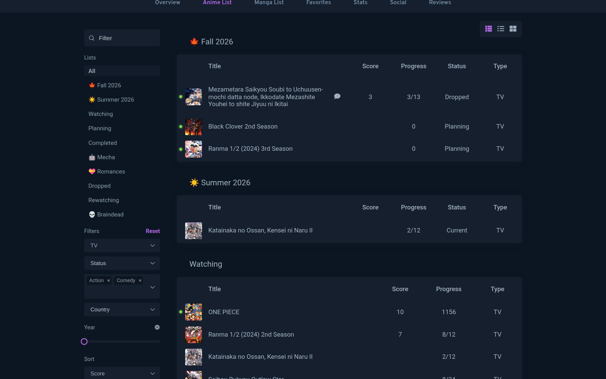

For AniList
Your AniList, remembered.
Small fixes for the things AniList forgets every time you reload.
- List filters that survive a reload
- Shareable filtered list links
- Bookmarks one click away
- Remembered sorting and voice actor language
anilist.co/user/lepetitpaco/animelist?format=TV&genres=Action,Comedy&sort=score
